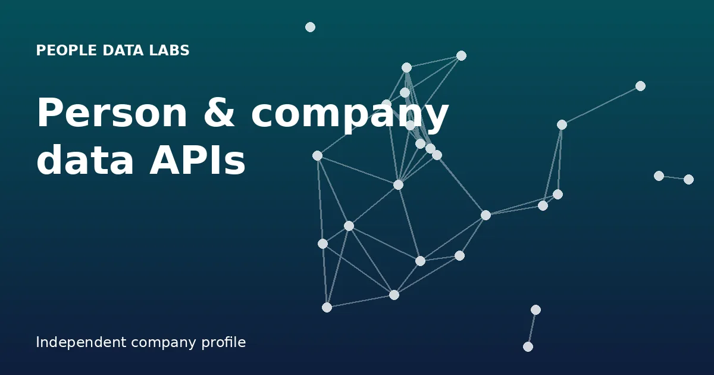

People Data Labs Explained: The Person and Company Data APIs Developers Build On
A walk through what PDL offers, how its endpoints behave and where engineering teams wire the data into their products.

People Data Labs (PDL) is a data-as-a-service business from San Francisco, started in 2015 by Sean Thorne and Henry Nevue. Companies license its person and company records instead of gathering them, then use them in hiring software, sales tools, risk scoring and AI features. For a brief profile, see our People Data Labs resource.
What is in the data
PDL merges many compliantly sourced datasets, then cleans and deduplicates them. People records include work history, schooling, skills, contact details and social profiles. Company records add firmographics, headcount analytics, talent flow and corporate hierarchy. Reviews cite roughly 1.5 billion unique people and 74 million companies; older company material used larger raw counts, so read figures as estimates.
Endpoints at a glance
Person EnrichmentBest-match full profile from what you already know: name, email, phone or social link.Person SearchBuild lists with Elasticsearch DSL or SQL, e.g. by title and location.Person IdentifyReturns several candidates when the lookup is ambiguous.Company Enrichment / SearchFirmographics: headcount, industry, HQ and funding.IP EnrichmentMaps an IPv4/IPv6 address to company, person and location, with proxy and VPN flags.Job Title EnrichmentCleans titles, companies and schools; autocomplete included.Data License FeedsBulk files via AWS, Snowflake, GCP or Azure.Developer experience
Requests are plain REST with the key in a header, and official SDKs cover five languages.
GET /v5/person/enrich?email=jane@example.com X-Api-Key: YOUR_KEY
Clay lets users enrich people and make segmented lists, Pipedream connects workflows, and AI agents can call enrichment and search to qualify leads live.
Typical use cases
- Hiring tech: enrich candidates, search talent pools.
- Sales and marketing: CRM enrichment, scoring, audiences.
- Fintech: fraud checks, risk, underwriting.
- Investing: firmographics for diligence and market maps.
- AI/ML: structured professional data for training and grounding.
Customers the company has named include Kleiner Perkins, Breezy HR, SugarCRM, 6sense, Lunchclub and Gem.
Who should use it
FAQ
What does People Data Labs sell?
B2B person and company data, delivered through APIs and bulk feeds.
How large are the datasets?
Outside sources quote around 1.5 billion distinct person profiles and more than 74 million company profiles.
What does the Person Enrichment endpoint return?
The closest-matching full profile for the identifiers you send, for instance an email address or a name plus company.
Is there a bulk option?
Yes, Data License Feeds can arrive via AWS, Snowflake, GCP or Azure.
Credits, compliance, opt-outs and how PDL stacks up against ZoomInfo and Apollo.